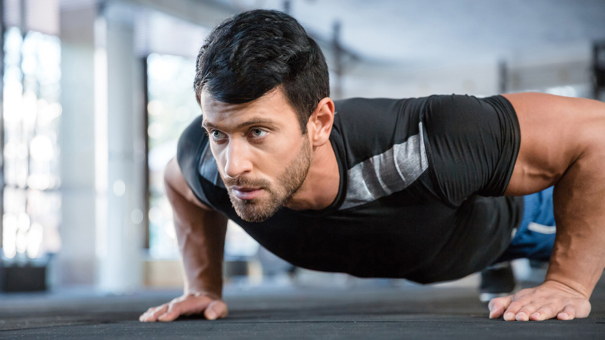
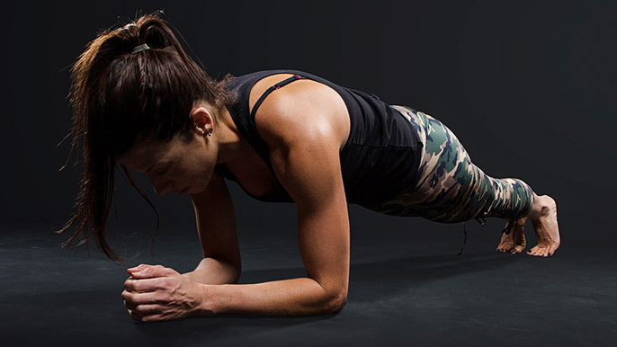
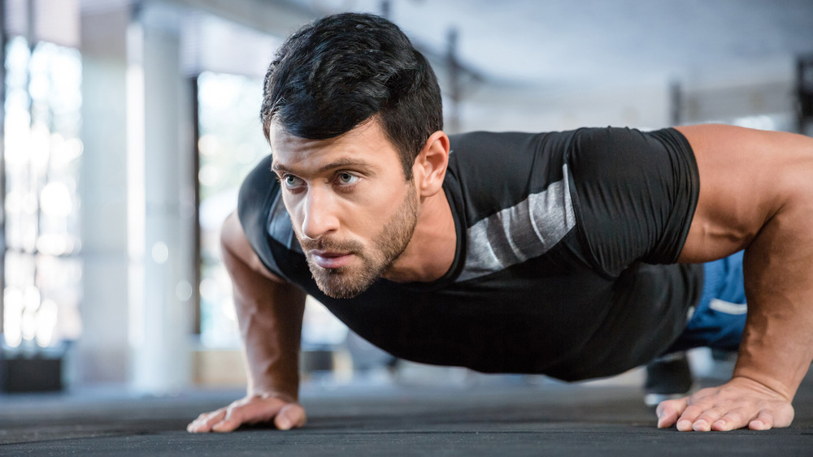
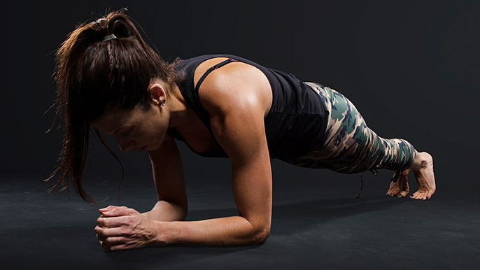

Work Out
we known you've been hitting the gym hard and busting it in your training. But spending hours lifting, day in and day out, might actually stall your progress. Recovery and rest are essential parts of any strength and conditioning program—and most coaches and trainers would argue it's just as or more important than the lifting itself. Recovery must occur before progress can be made. It's important for staying injury free, long-term consistent training, and maxing out from time to time.Follow these six tips to make sure you stay sharp.
 


